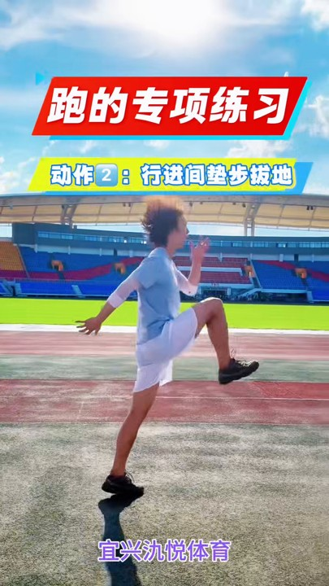
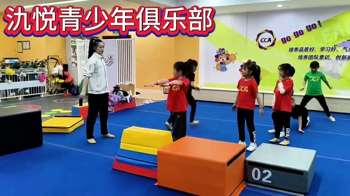
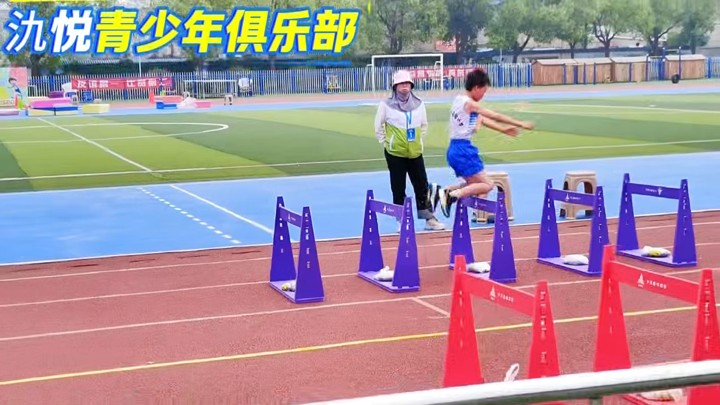
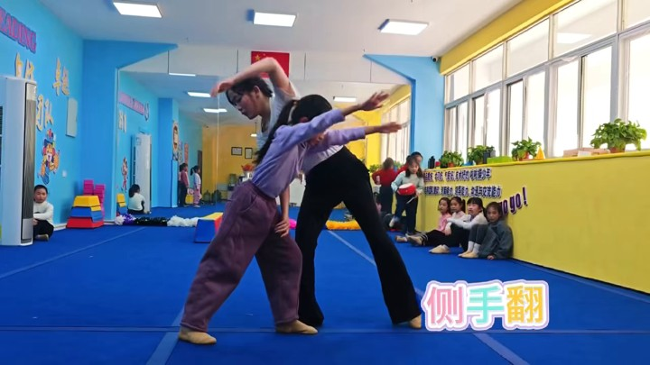

宜兴 · 青少年运动教育
宜兴青少年运动，
把动作练扎实。
中考体育、啦啦操、体态体能与趣味田径。
跑步、跳远、花球和器材练习，按兴趣和训练需要选课。
了解运动基础分步指导动作交流练习情况
FIND YOUR COURSE
孩子想练什么？
备考体育、学习啦啦操，或练习跑跳和身体协调，四类课程各有侧重。

专项动作 · 目标训练01
中考体育
练习跑步步伐、立定跳远等专项动作，配合基础体能和阶段训练。
查看训练内容
节奏表达 · 团队协作02
啦啦操
从花球基础手位练起，跟着节奏串联动作，再和同伴练习队列配合。
查看训练内容

动作基础 · 身体控制03
体态体能
通过垫上动作和软箱等器材练习，训练协调性、灵敏性与身体控制。
查看训练内容

跑跳探索 · 器材活动04
趣味田径
跑跳、变换步伐、跨过低栏，孩子跟着路线做练习，也参加小组活动。
查看训练内容
选课时，看看具体练什么。 对照孩子的兴趣和训练需要，比较四类课程。
比较四类课程
课堂记录 · 示范与指导JIUYUE SPORTS
HOW WE TEACH
老师怎样教，
孩子怎样练。
老师示范动作，带孩子分步练习，
再根据课堂表现交流练习重点。
- 01了解孩子的运动经历
告诉我们孩子喜欢什么、练过什么、这次想练什么。
- 02把动作拆开练习
老师示范后，孩子分步练习，再把动作连起来。
- 03交流练习情况
老师结合课堂表现，和家长交流接下来要练的内容。